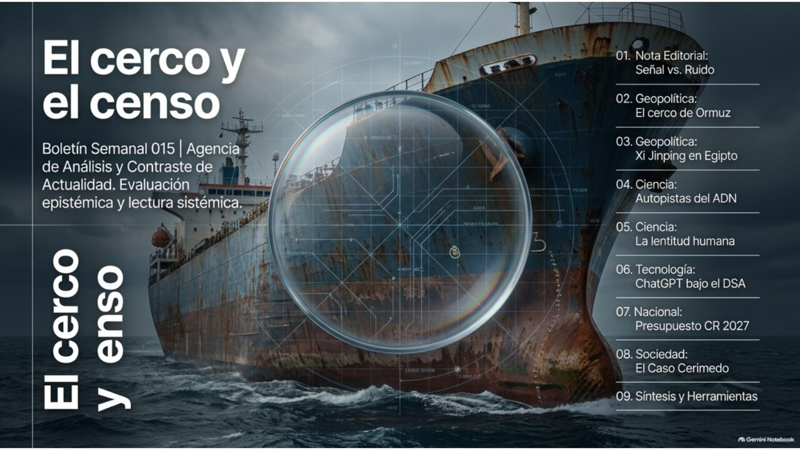
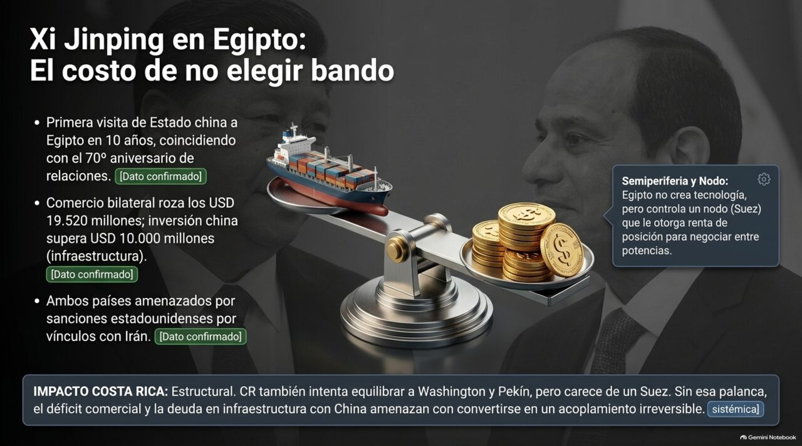
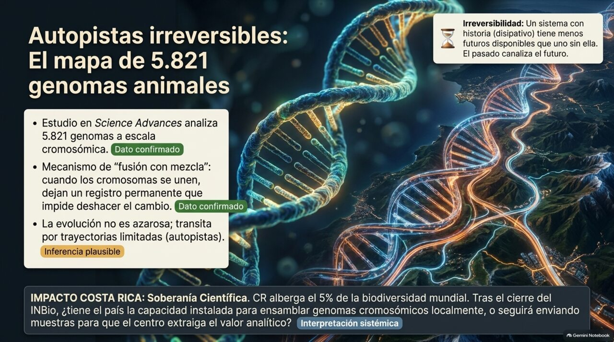
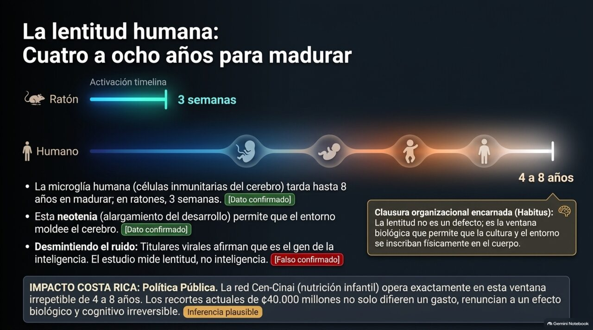
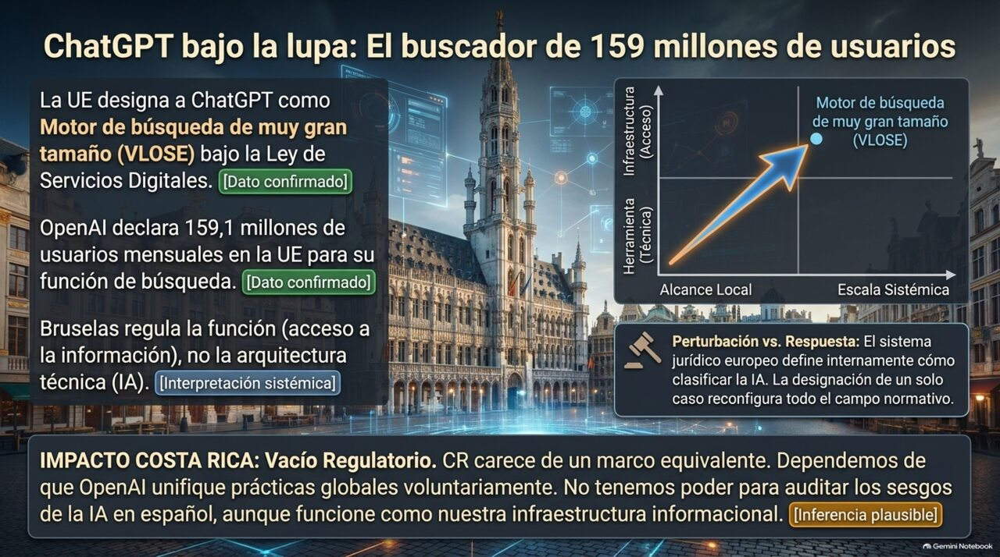
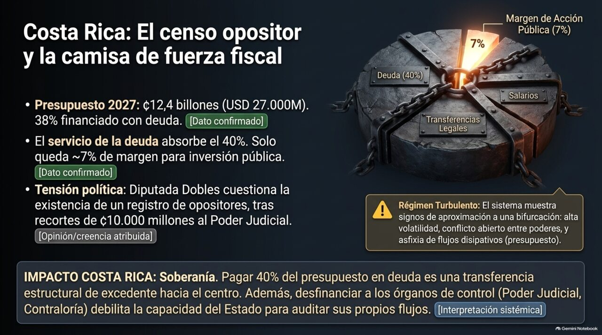
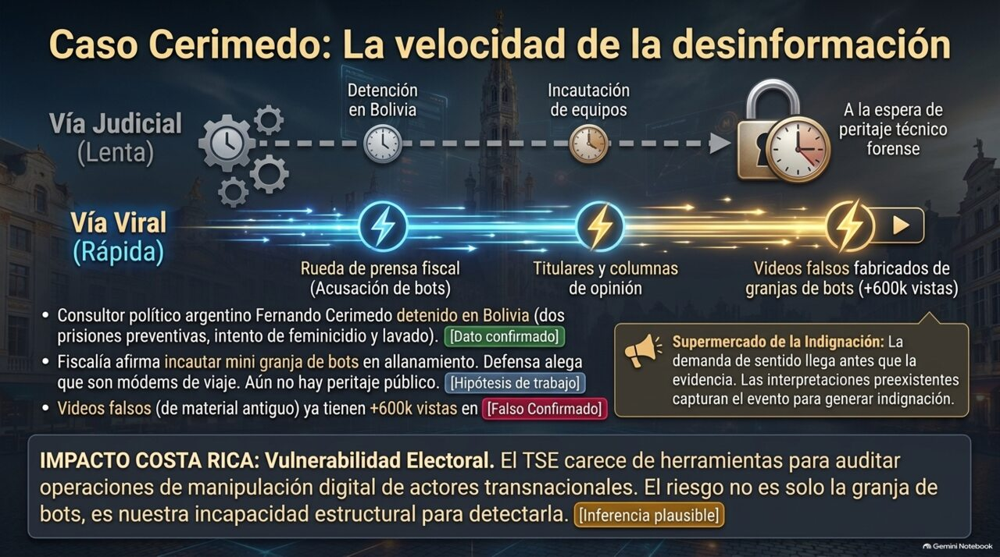

Siete historias de una semana de mundo — trazar una línea alrededor de algo y decidir quién queda adentro — explicadas con calma para quien quiera entender qué pasó de verdad.
Edición N.° 015 · Popular·26 de agosto al 2 de setiembre de 2026·San José, Costa Rica

Boletín Semanal N.° 015 · Edición para todo público · San José, Costa Rica.
Estimado lector, estimada lectora:
Esta semana dos cosas muy distintas terminaron pareciéndose. Una pasó en el mar, la otra en oficinas de gobierno. Las dos consisten en trazar una línea alrededor de algo y decidir quién queda adentro: en el estrecho de Ormuz, Estados Unidos ya castiga hasta a quien le conteste un correo a la autoridad que Irán creó para cobrar el paso; en Costa Rica, una diputada preguntó públicamente por qué el Gobierno tiene identificadas a personas opositoras, y para qué las usa. Cerco y censo. Vamos por partes.
— El equipo de ANCA-ADD
🎧 Escuche el análisis en audio
Dos analistas de IA desempacan en podcast el hilo que conecta esta edición: la irreversibilidad, desde el caso Cerimedo hasta el presupuesto de un país, pasando por Ormuz, Egipto y dos hallazgos de ciencia.
¿Por qué responder un correo se volvió delito en el estrecho de Ormuz?
no se trata de comercio, se trata de quién tiene derecho a ser reconocido como autoridadEl cerco ya no consiste solo en impedir el paso, sino en volver punible el gesto de reconocer a la otra parte.
Qué pasó de verdad
El 1.º de setiembre Estados Unidos volvió a atacar objetivos en Irán. El precio del petróleo saltó más de 5 % en un solo día y quedó rondando los 95 dólares por barril. Hace un año estaba en 68. Pero lo nuevo de la semana no fueron los ataques: fue algo más raro.
Irán creó una oficina —la PGSA— para administrar el estrecho de Ormuz y cobrar peaje a los barcos que pasan. Estados Unidos ya había advertido que quien pagara ese peaje se arriesgaba a sanciones. Esta semana amplió el aviso: ahora también corren riesgo los marineros y las empresas que respondan solicitudes de información de esa oficina. Ni pagar. Contestar. Es una manera muy precisa de decirle al mundo: esa oficina no existe, y si usted actúa como si existiera, lo sanciono.
Qué tan seguros estamos
Termómetro de certeza
✅Esto lo sabemos seguro: los ataques del 1.º de setiembre y el salto del petróleo hasta el entorno de 94–96 dólares están confirmados por fuentes coincidentes.
🤔Esto creemos, pero no es seguro: que Estados Unidos tenga «control total» del estrecho, como sostiene Trump. Los datos de tránsito de buques no lo respaldan: el movimiento sigue siendo bajo.
💭Esto es solo una posibilidad: que el acuerdo bilateral entre Irán y Omán sobre rutas marítimas sea un preludio de reapertura del estrecho. El propio viceministro iraní lo negó.
Por qué importa, en cristiano
Piense en un peaje de carretera: si usted cruza y le entrega sus papeles al oficial de turno, está aceptando —aunque sea sin querer— que ese oficial es el dueño legítimo de la carretera. Sancionar a quien simplemente responde un correo es, exactamente, evitar ese gesto de reconocimiento antes de que se vuelva costumbre. Es frenar la rutina antes de que fragüe el concreto administrativo: una vez que algo se hace «normal», ya no hay vuelta atrás fácil.
🌱 ¿Y en Costa Rica, qué tiene que ver?
Todo el combustible que quema Costa Rica se importa. El ICE confirmó esta semana que la planta térmica Moín IV va a operar hasta 2030, justo cuando El Niño reduce el agua disponible para generar electricidad. Un petróleo caro se nos mete por el precio de la gasolina, por el recibo de la luz, por el flete de lo que exportamos y por el seguro de los barcos que lo llevan.
¿Hacia dónde puede ir esto?
→
Canalización omaní: el acuerdo Irán–Omán se formaliza y crea una ruta tolerada de facto. El precio cede hacia 80–85 dólares.
→
Cerco prolongado: se consolida el statu quo — bloqueo, sanciones, tránsito bajo, precio entre 90 y 100 dólares.
→
Escalada sobre activos: se detiene o confisca un buque de tercera bandera. El conflicto se internacionaliza y el precio supera los 110 dólares.
Mundo · Geopolítica
Xi Jinping en El Cairo: ¿por qué esto también le habla a Costa Rica?
la visita mide cuánto cuesta hoy no elegir bando — y Egipto tiene con qué cobrar esa factura

Egipto controla un nodo —Suez— que le da renta de posición para negociar entre potencias. Costa Rica no tiene un equivalente.
Qué pasó de verdad
El presidente de China llegó el martes a Egipto: su primera visita de Estado en diez años, coincidiendo con los 70 años de relaciones entre ambos países. Egipto recibe ayuda militar de Estados Unidos desde hace décadas y, al mismo tiempo, tiene inversión china por más de 10.000 millones de dólares. Vivió cómodo en esa doble pertenencia mientras el mundo la toleraba. Ahora los dos países están bajo amenaza de sanciones estadounidenses por sus vínculos financieros con Irán. Traducido: la visita mide cuánto cuesta hoy no elegir bando.
Y aquí viene lo que nos interesa. Costa Rica está en una posición parecida —un país mediano que ha querido llevarse bien con Washington y con Pekín a la vez— pero con una diferencia que lo cambia todo: Egipto tiene el Canal de Suez y nosotros no tenemos nada equivalente. Cuando le sube el precio a la ambigüedad, Egipto puede cobrar por su posición. Costa Rica no tiene esa carta.
Qué tan seguros estamos
Termómetro de certeza
✅Esto lo sabemos seguro: fechas, itinerario y cifras de comercio e inversión coinciden entre agencias y fuentes oficiales de ambos países.
🤔Esto creemos, pero no es seguro: si se firmarán acuerdos económicos sustantivos. La reunión Xi–Al Sisi seguía en curso cuando cerramos esta edición.
💭Esto es solo una posibilidad: que los acuerdos incluyan mecanismos de pago que reduzcan la exposición al dólar, como liquidación en yuanes.
Por qué importa, en cristiano
Un préstamo del FMI es fluido: se puede renegociar, refinanciar, incluso cancelar. Pero aceptar miles de toneladas de cemento y acero para construir un tren o una ciudad entera es mucho más irreversible que aceptar un préstamo: modifica la geografía y decide dónde se instalan las fábricas por un siglo entero. El cemento pesa más que los billetes. Por eso la inversión china en infraestructura egipcia es un compromiso de otro calibre que un simple crédito.
🌱 ¿Y en Costa Rica, qué tiene que ver?
El déficit comercial de Costa Rica con China —del orden de 7 a 1— ya funciona como una transferencia neta de recursos, no solo como un dato de balanza comercial. La lección egipcia es que la inversión en infraestructura es exactamente el instrumento con el que ese déficit se convierte en dependencia de largo plazo. Cualquier decisión costarricense sobre infraestructura financiada con capital chino debería evaluarse no solo por su rentabilidad, sino por cuánta de esa irreversibilidad introduce.
¿Hacia dónde puede ir esto?
→
Profundización contenida: se firman acuerdos de infraestructura sin componente financiero sensible. Egipto conserva ambos canales.
→
Acoplamiento financiero: los acuerdos incluyen mecanismos de pago que reducen la exposición al dólar.
→
Sanción disuasiva: Washington designa entidades egipcias por sus vínculos con Irán, forzando a El Cairo a elegir.
Ciencia · Biología evolutiva
Un mapa con casi 6.000 genomas, y una idea que vale la pena
lo irreversible no es lo caótico: es lo encauzado

Cuando dos cromosomas se fusionan, sus genes se mezclan de una forma que ya no se puede deshacer.
Qué pasó de verdad
Investigadores de la Universidad de Viena compararon 5.821 genomas de animales, de 4.454 especies distintas, todos en un solo mapa. Un ser humano, un pulpo y un coral no se parecen en nada, pero dentro de sus células conservan pedazos reconocibles de un antepasado común de hace más de 600 millones de años. Lo que encontraron es que los genomas no cambian al azar: recorren un número limitado de caminos, «autopistas evolutivas». Cuando dos cromosomas se fusionan, sus genes se mezclan de un modo que ya no se puede deshacer.
Aquí hay una idea más importante que el hallazgo mismo. Uno tiende a pensar que si algo no se puede deshacer, todo queda abierto y cualquier cosa puede pasar. Este estudio muestra lo contrario: lo irreversible no es lo caótico, es lo encauzado. Cada paso que no se puede deshacer cierra caminos. Un sistema con historia tiene menos futuros posibles que uno sin ella, no más. Con cuidado —es una analogía, no una ley— sirve para pensar en historia humana, en instituciones, en comunidades: lo que ya pasó no solo deja huella, estrecha lo que todavía puede pasar.
Qué tan seguros estamos
Termómetro de certeza
✅Esto lo sabemos seguro: el estudio, revisado por pares y publicado en acceso abierto en Science Advances, documenta la irreversibilidad de la fusión con mezcla sobre 5.821 genomas.
🤔Esto creemos, pero no es seguro: que el método sirva para predecir hacia dónde va a evolucionar un genoma en el futuro. Los propios autores lo plantean como aplicación posible, sin haberla validado todavía.
💭Esto es solo una posibilidad: que aparezcan linajes con reversión aparente que compliquen la idea de «autopista» irreversible, y se abra una controversia metodológica.
🌱 ¿Y en Costa Rica, qué tiene que ver?
Tenemos cerca del 5 % de la biodiversidad del planeta en el 0,03 % de la tierra firme. Este mapa da un criterio nuevo para decidir qué proteger primero: buscar las especies que se salieron de la autopista, las que van por un camino raro. Esas guardan información que no está en ninguna otra parte. La pregunta que queda abierta —y no la pudimos verificar— es si el país tiene hoy la capacidad técnica de hacer ese análisis con especies nuestras, sobre todo después de que el INBio dejara de existir como entidad autónoma, o si vamos a seguir mandando muestras para que otros las analicen.
¿Hacia dónde puede ir esto?
→
Adopción metodológica: el marco se integra a criterios de conservación en agencias o listas rojas.
→
Herramienta de nicho: el mapa queda como recurso de referencia entre especialistas, sin traducirse a política de conservación.
→
Controversia metodológica: aparecen contraejemplos que cuestionan la idea de irreversibilidad total.
Ciencia · Neurobiología
Cuatro a ocho años: por qué el cerebro humano tarda tanto en madurar
la lentitud no es un defecto del desarrollo humano — es el tiempo que hace falta para que la cultura se vuelva cuerpo

Las duplicaciones humanas del gen SRGAP2 hacen que la microglía tarde diez veces más en madurar que en un ratón.
Qué pasó de verdad
En el cerebro hay unas células llamadas microglía: son las células de defensa del cerebro, y mientras uno se está desarrollando ayudan a decidir cuáles conexiones entre neuronas se conservan y cuáles se descartan. En un ratón, esas células maduran en unas tres semanas. En un ser humano, según un estudio de la Universidad de Columbia, tardan entre cuatro y ocho años, por unas copias extra del gen SRGAP2 que ningún otro animal tiene.
Lo importante es lo que eso significa: durante los primeros años de vida, las células encargadas de podar las conexiones cerebrales están ellas mismas todavía formándose. Es una ventana muy larga en la que el entorno alcanza a moldear el cerebro por dentro. Dicho de otro modo: la lentitud no es un defecto del desarrollo humano. Es el tiempo que se necesita para que lo que uno aprende se vuelva parte del cuerpo. Esa pausa de cuatro a ocho años nos hace humanos, básicamente.
Una advertencia sobre la fecha. El estudio se publicó el 28 de julio. El 31 de agosto reapareció en portales de divulgación con un titular nuevo, fechado ese día. Quien lo leyera el 31 de agosto lo tomaría por un descubrimiento recién salido: tenía cinco semanas. No hay engaño deliberado, hay una cadena de republicación que borra la fecha original — pero el efecto es real.
Qué tan seguros estamos
Termómetro de certeza
✅Esto lo sabemos seguro: los tiempos de maduración (4–8 años en humano frente a 3 semanas en ratón) y el mecanismo genético (SRGAP2) están confirmados por el estudio revisado por pares.
🤔Esto creemos, pero no es seguro: que madurar más lento nos haga más inteligentes. Los propios autores lo plantean en condicional, no como conclusión probada.
💭Esto es un riesgo, no una posibilidad deseable: que el hallazgo se use indebidamente para argumentar sobre diferencias entre grupos humanos. El mecanismo es específico de la especie, no de ningún grupo — cualquier uso en esa dirección es el reduccionismo que este boletín rechaza.
🌱 ¿Y en Costa Rica, qué tiene que ver?
Esa ventana de cuatro a ocho años es exactamente la primera infancia: el período en que la pobreza, la mala alimentación o la violencia se traducen con más eficacia en daño duradero. Esta misma semana, Cen-Cinai tuvo que desmentir públicamente que un recorte de 40.000 millones de colones implicara cierres de centros o despidos. No estamos diciendo que ese recorte específico cause un daño neurológico específico — nadie ha demostrado eso. Lo que sí dice la evidencia disponible es que hay ventanas que no se vuelven a abrir. Recortar dentro de una de ellas no es posponer un gasto: es renunciar a un resultado.
¿Hacia dónde puede ir esto?
→
Consolidación: réplicas independientes confirman el hallazgo y se extiende a otros genes duplicados.
→
Deriva divulgativa: la afirmación no probada del «gen de la inteligencia» se estabiliza por encima del hallazgo real.
→
Uso indebido: el hallazgo se invoca en argumentos sobre diferencias entre grupos humanos.
Mundo y Costa Rica · Tecnología
En Europa, ChatGPT ya es legalmente un buscador. ¿A quién le importa eso aquí?
Bruselas dejó de tratarlo como herramienta y pasó a tratarlo como infraestructura de acceso a la información

La designación regula la función del servicio, no su arquitectura técnica.
Qué pasó de verdad
El 31 de agosto la Comisión Europea decidió que ChatGPT es, a efectos de la ley, un motor de búsqueda de muy gran tamaño — el primer chatbot de inteligencia artificial que recibe esa clasificación. Reddit y Roblox fueron clasificados como plataformas grandes el mismo día. El motivo es de tamaño —la ley europea aplica sus reglas más duras a cualquier servicio con más de 45 millones de usuarios mensuales en la Unión Europea, y OpenAI declaró 159,1 millones—, pero lo interesante no es el tamaño: es el criterio.
A partir de ahora OpenAI tendrá que hacer evaluaciones anuales de riesgo, someterse a auditorías independientes y dar acceso a sus datos a reguladores e investigadores autorizados. (Nota de honestidad: no pudimos precisar la fecha límite exacta de cumplimiento. La ley da cuatro meses desde la notificación, y esa fecha no aparece en el registro público. Dejamos el rango: entre noviembre de 2026 y enero de 2027.)
Qué tan seguros estamos
Termómetro de certeza
✅Esto lo sabemos seguro: la designación, su fecha y la cifra de 159,1 millones de usuarios declarada por OpenAI están confirmadas por el comunicado oficial de la Comisión.
🤔Esto creemos, pero no es seguro: la fecha exacta límite de cumplimiento, que distintos medios calculan como noviembre, diciembre o enero.
💭Esto es solo una posibilidad: que OpenAI impugne la calificación ante el Tribunal General de la Unión Europea, o que otros asistentes con búsqueda web crucen pronto el mismo umbral.
Por qué importa, en cristiano
Lo están equiparando a la red eléctrica o al sistema de agua potable. Si millones de personas usan algo para informarse del mundo, ese algo no puede seguir tratándose como una caja negra ni como un simple juguete tecnológico. No están regulando el algoritmo por dentro —eso frenaría la innovación—, están regulando la función que cumple hacia afuera.
🌱 ¿Y en Costa Rica, qué tiene que ver?
Costa Rica no tiene nada parecido a esta ley. Las auditorías y el acceso a datos que OpenAI va a tener que cumplir en Europa no aplican en nuestro país. Pasa lo mismo que pasó con la ley europea de datos personales: nos beneficiamos de rebote cuando la empresa decide aplicar el mismo estándar en todas partes, y quedamos sin nada cuando decide que no. El que fabrica el modelo está en un lado del mundo, el que fija las reglas duras de su circulación está en otro, y nosotros consumimos el servicio sin haber participado en ninguna de las dos decisiones.
¿Hacia dónde puede ir esto?
→
Cumplimiento ordenado: OpenAI presenta su evaluación de riesgo a tiempo y publica la primera auditoría independiente.
→
Extensión de la categoría: otros asistentes con búsqueda web son designados en los próximos meses.
→
Litigio: OpenAI impugna judicialmente la calificación como buscador.
Costa Rica · Política y economía
Costa Rica: la camisa de fuerza y la lista
un presupuesto sin holgura y una pregunta sobre a quién tiene identificado el Gobierno

«No hay flexibilidad de gasto, por lo tanto no hay flexibilidad de políticas públicas» — Rodrigo Chaves, ministro de Hacienda.
El presupuesto
El martes 1.º de setiembre el ministro de Hacienda presentó el Presupuesto Nacional 2027: 12,4 billones de colones —en español, un billón es un millón de millones; no confundir con el billion inglés, mil veces menor—, unos 27.000 millones de dólares, 3,1 % menos que el de este año. El desglose: 40 % se va en pagar deuda, 28,2 % en transferencias ya obligadas por ley, 24,7 % en salarios. Queda alrededor de 7 % para todo lo demás.
El presupuesto recorta 10.000 millones de colones al Poder Judicial y propone congelar 30.000 millones más — un recorte que el propio Poder Judicial calcula en 42 % de su gasto operativo. La frase «realidades matemáticas inescapables», que usó el ministro, hace que una decisión política suene como un hecho de la naturaleza. Señalar eso no es decir que la restricción sea falsa —probablemente es real—; pero dentro de un presupuesto rígido igual hay que decidir a quién se le recorta, y esa decisión sí es política.
La lista
El domingo 31 de agosto, la diputada Claudia Dobles preguntó públicamente por qué el Gobierno tiene identificadas a personas opositoras: «ministro, ¿y los tenían identificados para qué?» y «¿desde cuándo en una de las democracias más sólidas de la región está prohibido ser opositor?». En el boletín técnico esta afirmación queda marcada como declaración atribuida, no como hecho confirmado: no logramos localizar la declaración original del ministro en su formulación textual.
Vale la pena explicar por qué eso es difícil. Las transmisiones en vivo de Casa Presidencial ya no llevan subtítulos. Sin subtítulos no hay transcripción automática; sin transcripción, el archivo no se puede buscar. Una declaración oficial queda existiendo solamente como audio dentro de un video de dos horas. El costo de verificar lo que dijo un funcionario se traslada del que habla al ciudadano que quiere comprobarlo — y sube tanto que, en la práctica, casi nadie lo paga. Es opacidad sin necesidad de ocultar nada: solo hay que hacer que buscar sea muy caro.
📌 Actualización posterior al cierre
Después de publicada esta edición encontramos la grabación: el canal de El Observador CR tiene un video del ministro de Justicia, Gabriel Aguilar Vargas, diciendo que ya tienen identificados a «zurdos» que se reunieron «un día de estos» (ver el clip ↗).
Y hay más: Semanario Universidad reportó que Freddy González, secretario general del partido de gobierno (PPSO), dijo en televisión que ya tienen «censados políticamente» a simpatizantes del Frente Amplio — «sabemos quiénes son, dónde están y hasta sus gustos y preferencias» — y que esa información salió de un formulario que se usó para repartir espacios en el acto de traspaso de poderes del 8 de mayo. No mostró pruebas.
Lo que esto cambia: ya no es solo lo que dijo la diputada Dobles — hay dos funcionarios distintos, por su cuenta, confirmando en cámara que existe algún tipo de listado de simpatizantes opositores. Lo que sigue sin saberse es si eso es un mecanismo formal con base legal, o dos ejercicios sueltos que coinciden en el fondo.
Qué tan seguros estamos
Termómetro de certeza
✅Esto lo sabemos seguro: el monto, la composición y el financiamiento del Presupuesto 2027 están documentados por Hacienda y confirmados por múltiples medios. Y, por la actualización de arriba, que hubo declaraciones públicas de un ministro y de un dirigente del partido de gobierno afirmando tener identificados o censados a simpatizantes opositores.
🤔Esto creemos, pero no es seguro: que ese listado sea un mecanismo formal y sistemático, con base legal — o si son dos ejercicios distintos que solo coinciden en el resultado.
💭Esto es solo una posibilidad: que el recorte al Poder Judicial sea selectivo y no solo aritmético. Falta comparar el porcentaje recortado a otras instituciones — ese dato existe en el documento presupuestario y no lo tenemos reunido.
Por qué importa, en cristiano
El sociólogo Johan Galtung llama a esto violencia estructural: no hay un agresor físico directo, pero las decisiones de un sistema tienen un efecto material y duradero sobre una población. No hace falta que alguien empuje a nadie para que haya daño — basta con que el sistema se tense y, en lugar de mantener flexible el tejido social, decida apretar los contrapesos que podrían objetarlo.
🌱 La semana, en conjunto
También hubo marchas estudiantiles hasta la Asamblea por el financiamiento universitario, una demanda del oficialismo contra magistrados, una publicación de una diputada contra un colega que otros calificaron de incitación a la agresión física, y el desmentido de Cen-Cinai. Puestos juntos, estos hechos dibujan un sistema con mucha tensión acumulada y poco margen para absorberla. No estamos diciendo que algo vaya a romperse — estamos diciendo que están presentes las señales que suelen aparecer antes de que un sistema se reorganice de manera profunda. Son cosas distintas y conviene no confundirlas.
¿Hacia dónde puede ir esto?
→
Contención institucional: la Asamblea restituye parte del recorte judicial y el Ejecutivo aclara el alcance del registro.
→
Tensión administrada: el presupuesto se aprueba con ajustes menores y el episodio del registro se disuelve sin verificación.
→
Escalada: se documenta vigilancia efectiva sobre figuras opositoras, o hay un incidente de violencia contra un actor político.
Sociedad · Comunicación política y justicia
El caso Cerimedo: una historia sobre cómo se fabrica una certeza
no es la nota más importante por lo que revela, sino por lo que enseña

El Supermercado de la Indignación: la demanda de sentido llegó antes que la oferta de evidencia.
Qué pasó de verdad
El 18 de agosto, el consultor político argentino Fernando Cerimedo fue detenido en Bolivia, pocas horas después de que la abogada Nadia Beller recibiera al menos tres disparos en un ataque armado. Ella sobrevivió. La Fiscalía lo imputó por intento de feminicidio; el 21 de agosto quedó con prisión preventiva, y el 29 de agosto le dictaron una segunda, por enriquecimiento ilícito. Cerimedo trabajó en las campañas de Javier Milei, Jair Bolsonaro, Nasry Asfura y Rodrigo Paz — eso está documentado y nadie lo discute.
Al allanar sus propiedades, la Fiscalía encontró efectivo, documentos y equipos de cómputo, y dijo que esos equipos eran una «mini granja de bots». Aquí hay que frenar: las autoridades no han mostrado imágenes, no hay peritaje técnico divulgado, y la defensa dice que eran teléfonos satelitales y módems. «Granja de bots» es, por ahora, la palabra que usó un fiscal en una conferencia de prensa. Puede terminar siendo cierta. Todavía no está probada.
Y lo que directamente es falso: circulan en redes videos con más de 600.000 visualizaciones que muestran una pared cubierta de celulares, presentados como el hallazgo. Son grabaciones viejas, sin relación con el caso — ya verificadas como falsas.
Qué tan seguros estamos
Termómetro de certeza
✅Esto lo sabemos seguro: la detención, las dos prisiones preventivas y la trayectoria de Cerimedo asesorando campañas en cuatro países están documentadas y no disputadas.
🤔Esto creemos, pero no es seguro: que los equipos incautados sean técnicamente una granja de bots. Es una caracterización fiscal sin peritaje divulgado, negada por la defensa.
💭Esto es una conjetura que este boletín no adopta: que exista una red coordinada de manipulación de escala continental. Ninguna fuente consultada la sostiene — lo documentado es una cartera de clientes, no una infraestructura probada.
Por qué importa, en cristiano
Mire la secuencia: un fiscal usa una expresión en una rueda de prensa → los titulares la convierten en hallazgo comprobado → columnas de opinión la usan como premisa para argumentar sobre otros países → aparecen videos falsos que le ponen imagen. En cada paso la certeza que uno siente aumenta, mientras la evidencia que la sostiene disminuye — exactamente al revés de como debería funcionar. La verdad material es lenta, porque requiere peritajes; fabricar un video falso toma segundos, y una vez que esa semilla germina en la mente de cientos de miles de personas, el desmentido nunca alcanza la misma velocidad.
🌱 Lo que quedó tapado, y ¿Costa Rica?
El caso empezó porque le dispararon tres veces a una mujer. En la conversación pública, eso quedó en segundo plano frente a la discusión sobre bots — y no creemos que sea casualidad: la violencia contra una mujer no le sirve a ningún bando político como argumento exportable a otros países. La granja de bots sí. La narrativa útil entierra al hecho incómodo y lo vuelve invisible.
Costa Rica tuvo elecciones el 1.º de febrero. El Tribunal Supremo de Elecciones no tiene competencia expresa para investigar manipulación coordinada en redes, y no existe registro obligatorio de consultores políticos extranjeros. El caso boliviano no prueba que aquí haya pasado algo parecido — muestra que, si pasara, no tendríamos con qué detectarlo. Y una advertencia práctica: este caso va a circular en redes ticas como prueba de una red continental, videos falsos incluidos. La pregunta que conviene hacerse: ¿ya hay peritaje, o todavía es solo lo que dijo un fiscal?
¿Hacia dónde puede ir esto?
→
Peritaje concluyente: se divulga informe técnico sobre los equipos, y la caracterización se confirma o se descarta.
→
Disolución narrativa: las causas avanzan por feminicidio y lavado; la cuestión de los bots nunca se peritó y queda como creencia sin base.
→
Ampliación transnacional: aparecen requerimientos judiciales de otros países sobre las operaciones del consultor.
Lo que todavía queda en el aire
preguntas honestas, que nadie puede responder todavía con certeza
¿El listado de opositores es un mecanismo formal con base legal, o son ejercicios sueltos? Ya confirmamos que hubo declaraciones públicas al respecto (ver actualización en la nota 6) — falta saber qué tan organizado es.
¿El recorte al Poder Judicial es proporcional o selectivo? Falta la comparación con otras instituciones.
¿Los equipos incautados a Cerimedo son técnicamente una granja de bots? Falta el peritaje.
¿Cuánto del precio del petróleo es escasez real y cuánto es prima de riesgo?
¿Se firmaron acuerdos concretos en la visita de Xi a Egipto? La reunión estaba en curso cuando cerramos.
Cómo leemos las noticias aquí. Este boletín no le dice qué pensar. Le dice qué tan firme es el piso sobre el que está parada cada afirmación. Distinguimos entre lo que está confirmado por varias fuentes independientes, lo que se deduce razonablemente de eso, lo que es todavía una hipótesis por comprobar, lo que es opinión de alguien, y lo que es pura conjetura. Cuando las fuentes se contradicen, lo decimos y no elegimos por usted: esta semana declaramos cinco contradicciones sin resolver. Y cuando algo circula como hecho sin estarlo, lo marcamos — esta semana marcamos dos: la lista de opositores y la granja de bots.
Este análisis no es una predicción ni una recomendación política. Todo lo que decimos aquí puede cambiar si aparece nueva evidencia. Todas las búsquedas se hicieron el 2 de setiembre de 2026.